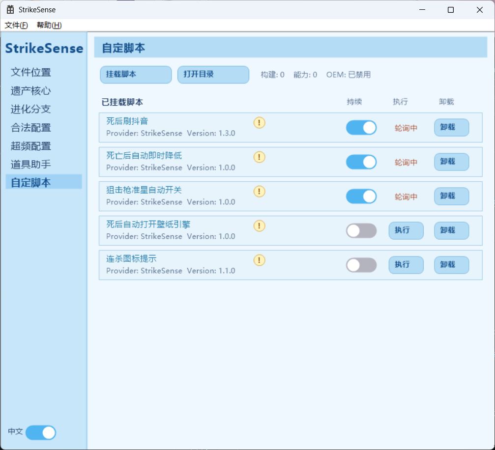

把分散功能整成一个可维护的软件壳
StrikeSense 把音效、道具大图、输入增强、通知提示、TextGUI 和脚本执行都放进统一界面。你不需要再在多个散装脚本、配置文件和临时工具之间来回切。
StrikeSense 不读写游戏内存，不绕过反作弊，不做云控盒子。它把 GSI 状态接入、音效增强、道具覆盖、VScript / CScript 工作流和主题化界面收拢成一套真正能长期使用的软件体验。
新版程序在启动图和主题系统里已经转向更柔和的紫雾、花瓣粉和玻璃高光，这一版首页也同步回到现在的风格。


不是“电竞盒子”，而是一套围绕官方状态、脚本和前台覆盖层的桌面软件。
StrikeSense 把音效、道具大图、输入增强、通知提示、TextGUI 和脚本执行都放进统一界面。你不需要再在多个散装脚本、配置文件和临时工具之间来回切。
程序依赖 CS2 官方 GSI、标准输入映射和本地文件工作流，不注入、不云控、不强制联网。现在连视觉层也已经升级为主题体系，不再停留在老式浅蓝科技壳。
StrikeSense 通过对接反恐精英2（CS2）官方提供的 GSI (Game State Integration) 接口，以绝对安全、纯净的形式实时捕获对局事件。我们致力于在不破坏游戏公平性和内存完整性的前提下，通过物理级别的硬件逻辑优化与视觉重组，为硬核身法玩家、音效定制爱好者提供极致的竞技体验。
这些主题在程序内仍是开发中状态，因此首页只保留预告感，不伪装成已经完成。
从主界面、进化面板到脚本页，网站内容现在按程序现状重新排序。

主程序承接 GSI、音效与常规增强配置，作为整套体验的稳定底座。
通知、TextGUI、主题与扩展能力都在这里汇总，不再是零散堆叠。

把真正常用的落地配置整理进软件界面，降低手改文件门槛。

灰区能力单独收口、单独提示，和纯净部分明确分层，不再混成一团。

游戏内大图覆盖仍是最直接的实战功能之一，保留高可视性入口。
脚本文档、示例与工作台已经成体系，是当前版本最有延展性的部分。
下面保留旧版完整的模块级介绍文案，信息量只增不减。
由DM客户端产品的GSI程序移植而来并经过全新优化的基本功能，剥离了共享内存信息，现在能够独立运行，且拥有精美的可视化UI设置，而无需手动编辑JSON文件。
除了移植而来的基本功能，StrikeSense提供了在DM-GSI未曾提供的功能，它们能大幅提高游戏体验，开启您的进化之旅。
我们从DearMoments-V3客户端（代号Autumn）提取了一些重要功能，并让它直接运行到autoexec，功能虽少，但实用性超强，且不需要再担心合法性问题。
我们一如既往地添加了Semi Rage功能，独家研发的急停计算公式加上用户可编辑参数，或许能让您的体验更好。
玩家在对局中无需切换到桌面看视频，热键一键在游戏最前端呼出全屏半透明教学。支持键盘快捷键无缝浏览各省时地图的烟、闪、火点位，按下 [Enter] 即可秒放高清瞄准点站位大图。现学现丢，让你瞬间具备职业级的道具覆盖率与战术威慑力！
比起市面上的同类产品，这是我们最大的底气，我们允许挂载用户的自定义脚本，程序已为您简化逻辑，只需要学习文档，您可以轻松编写任何您想要的效果。
新版首页把“纯净性、脚本性、视觉统一”三件事摆到台面上。
围绕 GSI 展开，不用碰游戏内存，也不依赖不透明的云端控制。
模块开关、脚本行和控制台信号现在可以走同一套视觉提示与显示管线。
VScript 已覆盖状态变量、控制台消费、Steam 账号对象和模块控制，不再只是几个演示 API。
程序已有成组主题和启动图方向，网站不再继续挂着几个月前的旧浅蓝外观。
你想知道的，这里都有解答
我们只做“极致纯粹”的艺术品，而绝不制造“商业垃圾”。
反观市面上那些所谓的“XX电竞盒子”、“XX辅助助手”等同行产品，底层代码极度臃肿，内部塞满了强制性的云端服务器验证、隐蔽的云控后门后台、以及恶劣的开屏推广广告。这些产品不仅在后台疯狂蚕食你的 CPU 和系统内存，导致你的 CS2 游戏在实战中高频产生致命掉帧、卡顿，甚至在暗地里悄悄扫描你的本地隐私文件、带有极大的木马中毒与被控风险。
而 StrikeSense 走的是完全相反的极客路线：
• 完全无毒安全：底层基于纯净现代原生构建，不包含任何恶意行为。
• 零联网 / 零云控 / 零云服务器：软件的核心运行逻辑完全不需要联网，没有让人恶心的强制自动更新，也没有云端监控，彻底杜绝了任何数据上传和后门篡改可能！
• 同类最高性能 / 极低占用：经过纯硬件级的多线程架构优化，即使开启核心的高清遮罩，资源占用也几乎低到可以忽略不计。我们将每一帧的绝对流畅度，都完整无缺地还给你的游戏！且内置了低内存模式，通过低内存模式，甚至可以将软件的运行内存压缩到10MB以内！


绝对不会。 StrikeSense 没有任何绕过 VAC 或任何反作弊系统的代码。音效和护眼闪光平替基于 Valve 官方开放的 GSI 状态服务器；身法优化和道具助手则是外部标准的键盘映射模拟和前台遮罩绘图。软件 100% 不读写、不注入 CS2 游戏内存，属于纯净的外部增强工具。
软件具备自主保活和引导功能，首次运行或点击主界面的“打开文件夹”按钮，系统会自动为您打开您需要的文件夹。另外，软件内置完美的 中/英文一键国际化切换（i18n），页面控件完美自适应。
核心定义：超频配置（Rage）绝对不是外挂。
首先，StrikeSense 没有且未来也绝不会包含任何“绕过、躲避、反侦测反作弊”的代码。如果它不合法，但同类型的软件或硬件通过驱动或其他手段尝试隐藏自己的行为导致反作弊抓不住它，那本质上是在欺诈反作弊。但实际情况是：目前市面上许多高端电竞硬件（如磁轴键盘的 Snap Tap 功能等）在硬件层面本身就具有完全相同的急停和脉冲响应优化。所以，因此，我们不需要隐藏自己的行为去绕过反作弊。
我们认为，明知某个行为是作弊，但是通过驱动或硬件（DMA设备访问游戏内存、USB驱动）实现绕过反作弊的行为并声称它完全合法的行为是可耻的，且在不同的比赛和服务器平台中，应当遵循不同的规则（如职业联赛和普通社区）。